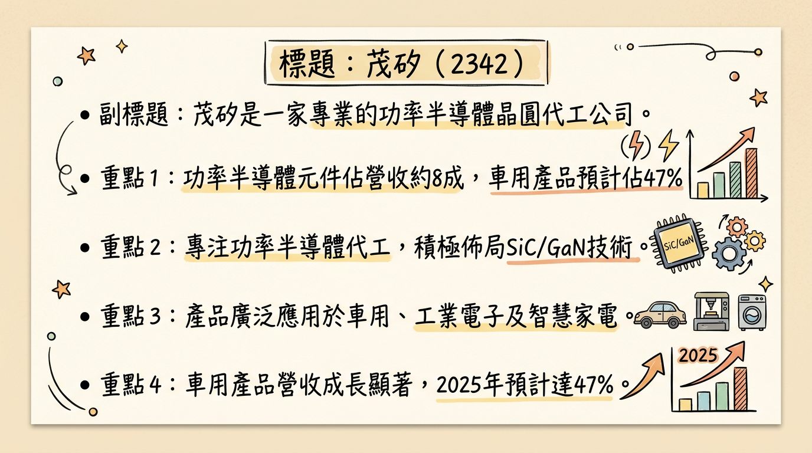
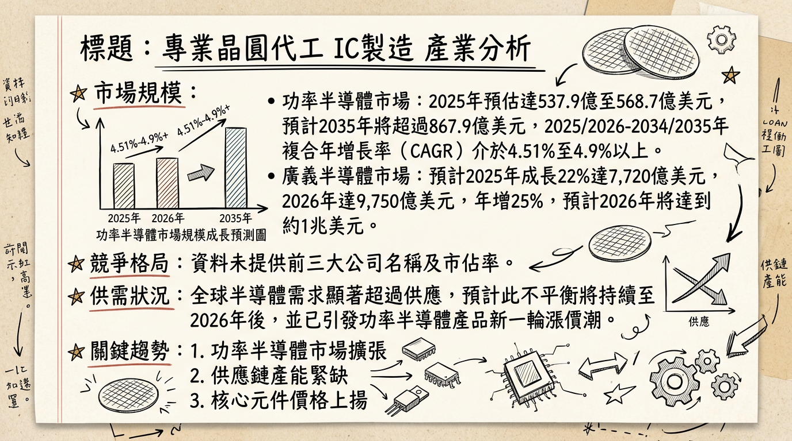
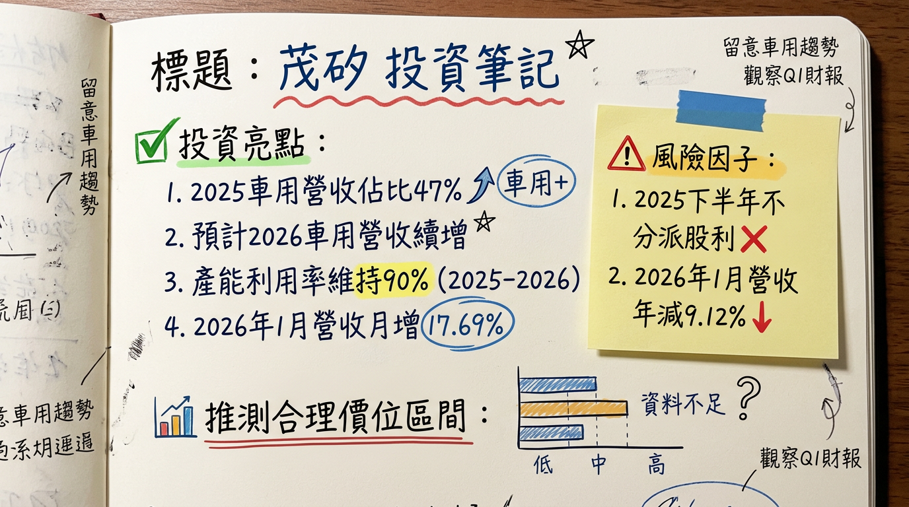

2342 茂矽 深度研究報告
今天日期：2026年03月06日
一句話摘要
茂矽作為專業功率半導體晶圓代工廠，深耕車用、工業與智慧電源市場。儘管2025年第三季受匯率波動與成本壓力影響導致獲利承壓，且2026年第一季仍虧損，但在車用產品佔比持續提升、以及碳化矽（SiC）與氮化鎵（GaN）等第三代半導體新產品預計於2026年陸續量產貢獻營收的帶動下，公司營運預期將從2026年下半年開始逐步改善，長期成長動能明確，但短期獲利仍面臨挑戰。
公司概覽
茂矽（2342）主要從事專業晶圓代工服務，專注於功率半導體元件的生產。其核心產品包括金氧半場效電晶體（MOSFET）、絕緣閘雙極電晶體（IGBT）以及各類二極體（Diode）。這些產品廣泛應用於車用電子、工業電子及智慧家電等領域。公司也積極投入碳化矽（SiC）和氮化鎵（GaN）等第三代半導體產品的研發與佈局。
營收結構 (2025年前三季)
| 產品類別 | 營收佔比 (%) | 說明 |
|---|
| MOSFET + IGBT | 56 | 金氧半場效電晶體與絕緣閘雙極電晶體 |
| 車用二極體 (Diode) | 24 | 各類二極體，主要應用於車用電子 |
| 邏輯產品 | 11 | 其他邏輯元件 |
| 其他產品 | 9 | |
| 合計 | 100 | |
| 功率元件總計 | 約 80 | 佔總產能約 75% 至 80%，為營收主力 |
| 車用產品營收佔比 | 預計 47 | 2025年預計佔比，預期2026年將持續提升 |
目前未找到茂矽有明確提及多個製造基地及其各基地營收貢獻比例的最新資料。公司曾表示，為因應中長期營運發展計畫，包括碳化矽製程平台擴產及未來8吋廠籌建，正將台灣、日本、東南亞、歐美等地納入可能區域考量，但尚未敲定落腳地點。
核心競爭優勢
功率半導體專業代工深耕：專注於MOSFET、IGBT、Diode等功率元件晶圓代工，具備成熟製程技術與經驗。
高車用產品營收佔比：車用產品營收佔比預計2025年達47%，並看好2026年將進一步提升，受惠於電動車與汽車電子化趨勢。
第三代半導體積極佈局：在碳化矽（SiC）MOSFET與氮化鎵（GaN）產品的研發與量產上取得進展，預計2026年開始貢獻營收，搶佔未來高成長市場。
潛在轉單效應：受惠於中美科技對抗下的供應鏈轉單效應，尤其在中低壓MOSFET與整流二極體產品方面，有望承接來自歐美及亞洲系客戶訂單。
集團垂直整合優勢：上游基板與磊晶層由環球晶(6488)供應，IC設計由朋程(8255)旗下安傑特承擔，母公司朋程承接後段封裝並與國際車用客戶接軌，形成完整的供應鏈協作。
財務分析
月營收趨勢 (2025年8月 - 2026年1月)
| 月份 | 金額 (億元) | 月增率 MoM (%) | 年增率 YoY (%) |
|---|
| 2026年1月 | 1.66 | 17.7 | -9.1 |
| 2025年12月 | 1.41 | 0.8 | -20.7 |
| 2025年11月 | 1.40 | -15.9 | -23.9 |
| 2025年10月 | 1.66 | -4.3 | -7.6 |
| 2025年9月 | 1.74 | 0.0 | -0.9 |
| 2025年8月 | 1.74 | 5.3 | -0.4 |
- 季營收: 5.12 億元，較前一季減少 2.66%，較去年同期減少 2.42%。
- 毛利率: 10.24%。
- 營業利益率: -9.02%。
- EPS: -0.03 元。
全年度營收與 EPS (2024實際 + 2025預估)
* 全年度營收: 18.93 億元，年增 27.7%。
* EPS: 0.58 元。
* 截至 2025 年第三季累計合併營收為 15.9 億元，年增 17.56%；歸屬於母公司稅後虧損 3560 萬元，每股虧損 0.23 元。
* 市場普遍預期 2025 年全年營收表現將與 2024 年相近。
* 券商報告（2025年5月21日）預計 2025 年 EPS 為 1.0 元，但此預估與公司實際表現（截至Q3累計虧損）存在顯著差異。
法說會重點 (2025年12月3日/4日)
- 2026年營運展望：管理層預期2026年營收表現及車用需求將與2025年相當。
- 產能利用率：預計2025年整體產能利用率可維持約90%，並延續至2026年。2025年前三季晶圓出貨片數約41.7萬片，年增17.8%。
- 產品結構優化：車用產品佔比在2025年估計達47%，並看好2026年將進一步提升。公司將持續聚焦車用、工業及智慧電源等應用作為中長期發展主軸。
- 新產品進度 (預計2026年量產貢獻營收)：
*
IGBT：1200V FS-IGBT新一代產品已進入送樣階段，將挹注2026年營收。
* MOSFET：120V-300V中壓區段的NMOS及PMOS產品為未來佈局方向，已有客戶積極洽談中。
* 其他產品：FRED/SGT MOSFET/TVS等研發新產品皆已進入送樣階段。
* 碳化矽 (SiC) MOSFET：650V/1200V平面型產品研發已接近尾聲，即將送樣，預估2026年可進入量產。溝槽結構的SiC MOSFET則配合客戶需求同步研發，預期2026年將陸續完成送樣。
* 氮化鎵 (GaN)：產品亦已展開初步規劃。
- 資本支出：近年陸續投資新設備與廠務擴充，雖短期壓縮獲利，但長線有利車用、工業及智慧電源等高附加價值產品發展。公司董事會通過私募普通股增資案，主要因應碳化矽（SiC）製程平台擴產、減碳設備更新與未來8吋廠籌建。
券商觀點
券商目標價與評等
| 券商名稱 | 目標價 (新台幣元) | 評等 | 日期 |
|---|
| CMoney研究員 | 35 | 區間持有 | 2025年7月17日 / 2025年5月21日 |
| 備註 | 未找到 2025-2026 年的最新券商目標價資訊，上述資訊已逾半年。 | | |
- CMoney研究員：預計 2025 年 EPS 為 1.0 元 (日期：2025 年 7 月 17 日 / 2025 年 5 月 21 日)。
- 備註：未找到其他券商對 2025-2026 年 EPS 的最新預估數字。且CMoney對2025年EPS的預估與茂矽實際前三季累計虧損-0.23元，以及2026年第一季每股盈餘-1.23元，存在顯著差異。
重大評等調整
- 未找到 2025-2026 年的最新重大調升/調降評等資訊。
財報深度分析
利潤率趨勢
近 8 季毛利率、營業利益率、稅後淨利率與 EPS 趨勢
| 年度/季度 | 毛利率 (%) | 營業利益率 (%) | 稅後淨利率 (%) | 稅後淨利 (仟元) | 每股盈餘 (元) |
|---|
| 2025 Q3 | 10.24 | -9.02 | -0.91 | -4,650 | -0.03 |
| 2025 Q2 | 17.92 | -0.20 | -11.08 | (未揭露具體值) | -0.37 |
| 2025 Q1 | 20.63 | 3.18 | 4.97 | 28,000 | 0.18 |
| 2024 Q4 | 22.76 | 6.03 | 7.56 | 40,000 | 0.26 |
| 2024 Q3 | 24.01 | 6.67 | 5.93 | (未揭露具體值) | 0.20 |
| 2024 Q2 | 21.89 | 3.59 | 6.08 | (未揭露具體值) | 0.18 |
| 2024 Q1 | 10.93 | -11.22 | -2.79 | (未揭露具體值) | -0.06 |
| 2023 Q4 | -6.99 | -34.96 | -40.03 | (未揭露具體值) | -0.80 |
- 2024年營運轉佳：受惠於產業市況逐步復甦及急單增加，2024年毛利率、營益率、稅後淨利率顯著好轉，全年EPS達0.58元，擺脫2023年的虧損。
- 2025年獲利下滑：2025年第一季獲利2800萬元，EPS 0.18元。但第二、三季受總體經濟逆風（匯率及關稅導致客戶訂單趨緩）、新台幣強升匯損以及台電電價調漲、新購設備折舊費用增加等成本壓力影響，毛利率從Q1的20.63%下降至Q3的10.24%，營業利益率與稅後淨利率轉負，導致Q2與Q3皆呈現虧損。
存貨與營運
近 4 季存貨週轉天數與營運週轉趨勢
| 年度/季度 | 存貨週轉天數 (天) | 應收帳款收現天數 (天) | 營運週轉天數 (天) |
|---|
| 2025 Q3 | 52.53 | 57.38 | 109.90 |
| 2025 Q2 | 56.53 | 55.19 | 111.71 |
| 2025 Q1 | 56.90 | 56.25 | 113.15 |
| 2024 Q4 | 62.40 | 57.80 | 120.21 |
- 存貨去化加速：從2024年第四季的62.40天下降至2025年第三季的52.53天，顯示存貨去化速度加快，目前沒有明顯異常堆積現象。
- 營運效率提升：營運週轉天數呈現下降趨勢，從2024年第四季的120.21天下降至2025年第三季的109.90天，表示從現金買進存貨到收回現金所需時間縮短，營運效率有所提升。
資本支出與產能
- 資本支出趨勢：未找到2024-2026年茂矽具體的資本支出金額和詳細趨勢。但公司法說會提及「近年陸續投資新設備與廠務擴充」，且「新購設備投入產生的折舊費用增加」，顯示有持續性的資本支出投入。私募增資案亦規劃用於SiC擴產及未來8吋廠籌建。
- 產能利用率：2025年前三季月產能約44.5萬片，稼動率約90%，表現略優於2023、2024年，預期2026年將延續此高稼動率。
- 新增產能：碳化矽產線初期月產能預計為3千片（2025年5月資訊），預計2026年初量產。未來8吋晶圓廠籌建仍在規劃中。
其他財報重點
* 2025 Q3: 25.81%
* 2024 Q4: 26.84%
* 趨勢：負債比率在2024年至2025年第三季之間波動但整體略為下降，顯示財務結構相對穩健。
* 2025 Q3: -10,262 仟元
* 2025 Q2: 38,568 仟元
* 2025 Q1: 68,964 仟元
* 2024 Q4: -94,629 仟元
* 趨勢：自由現金流量波動較大，2025年Q1/Q2轉正，但Q3再次轉負，顯示公司現金流狀況仍不穩定，需要進一步觀察。
- 業外收支：2024年主要受業外轉盈助攻推升獲利。2025年第二季受新台幣強升匯損影響業外，而第三季業外收支佔稅前淨利比為-891.19%，顯示業外項目對稅前淨利有顯著的負面影響。
股權異動
- 董監事/大股東申報轉讓紀錄：未找到2024-2026年的申報轉讓紀錄。
- 庫藏股買回紀錄：未找到2024-2026年的庫藏股買回紀錄。
- 可轉換公司債：未找到2024-2026年發行可轉換公司債（CB）的相關資訊。
- 增減資：董事會於2025年5月通過私募普通股增資案，額度不超過5000張，主要因應中長期營運發展計畫。未找到其他現金增資或減資計畫。
- 股利政策：
*
2024年度：每股現金股利0.3元（配發率51.72%），除息交易日為2025年7月31日。
* 2025年度：董事會於2026年2月22日決議，2025年下半年擬不分派股利。
產業分析
產業數據
全球功率半導體市場規模與成長率
* 2025年估計為 537.9 億美元至 568.7 億美元。
* 2026年預計達到 561.6 億美元至 599.8 億美元。
* 預計到2035年，市場規模將超過 867.9 億美元，2026年至2035年複合年增長率（CAGR）超過 4.9% (或 4.51%)。
* 2026年功率半導體市場整體呈現「高需求與有限供應」的激烈競爭階段，供需不平衡預計持續。
* 漲價潮：2026年開年以來，英飛凌、Vishay等國際大廠，以及華潤微等中國業者陸續發布漲價通知，涉及MOSFET、IGBT、二極體等核心產品，漲幅普遍在10%以上，部分產品達20%。此輪漲價由成本端承壓（銅、銀等貴金屬價格暴漲，銅價在2025年上漲34.34%，2026年開年再漲超過40%）與需求端爆發（新能源汽車、工業自動化）共同驅動，漲價潮可能延續至2027年。
* 晶圓代工：功率半導體主要依賴8吋晶圓成熟製程。全球主要晶圓廠轉向先进制程導致功率器件代工資源緊張。中芯國際等已提價10%，預計2026年8吋晶圓代工價將上漲5%至20%。
* SiC供需：碳化矽（SiC）目前處於嚴重供過於求階段，預計到2026年上半年才能實現初步供需平衡。
* 車規級市場：處於供需緊平衡狀態。新能源汽車產業帶動功率器件需求爆發式增長（年增長率超過30%），但認證週期長（2-3年）導致產能難以快速釋放，供需缺口持續存在，價格具韌性。
* 成熟製程：經歷兩年調整後已走出谷底，預計2026年平均產能利用率將穩定維持在80%以上。
* 2024年中國功率半導體行業上市公司平均毛利率約為 26.29%。
* 整體半導體行業在2024年的平均利潤率從 23.5% 增長到 28.6%。
* 個別公司如Magnachip，2025年Q4毛利率為9.3%，預計2026年Q1提升至14%至16%。
競爭格局
全球功率半導體市場主要參與者 (2024/2025年數據)
| 公司名稱 | 2024年全球市佔率 (功率半導體) | 2025年全球GaN功率元件市佔率 | 備註 |
|---|
| 英飛凌 (Infineon) | 第一名 (市佔率有所下降) | 第三名 (16%) | 傳統龍頭，但在市場變化中市佔率略降 |
| 安森美半導體 (ON Semiconductor) | 第二名 (市佔率有所下降) | - | |
| 意法半導體 (STMicroelectronics) | 第三名 (市佔率有所下降) | - | |
| 士蘭微 (Silan Micro) | 第六名 (3.3%) | - | 中國業者，市佔率提升 |
| 比亞迪 (BYD) | 第七名 (3.1%) | - | 首次躋身全球前十，市佔率提升 |
| 英諾賽科 (Innoscience) | - | 第一名 (32%) | 中系GaN龍頭，具成本競爭力，8吋GaN晶圓報價約1,200美元 (低於一般2,000美元) |
| Power Integrations | - | 第二名 (17%) | |
- 技術：茂矽積極佈局SiC/GaN，追隨產業趨勢。但國際大廠如英飛凌、安森美等在SiC/GaN領域技術積累深厚，產品組合更廣。中系業者如英諾賽科在GaN領域已展現成本優勢。
- 產能：茂矽主要代工功率半導體，多數使用8吋成熟製程。國際大廠已啟動12吋GaN功率晶圓廠，並提升SiC基板自製能力。中國功率基板產能已突破242萬片以上。
- 客戶：茂矽車用產品佔比高。國際大廠擁有全球多元客戶群。
- 價格：功率半導體市場正經歷漲價潮。車規級市場價格具韌性。中國業者在GaN產品上已展現價格競爭力。
產業趨勢
第三代半導體 (SiC/GaN) 的快速發展與應用普及：
* 具體影響：SiC/GaN在高壓、高頻條件下性能優於矽基元件，正加速取代傳統矽基功率元件。
* 電動車 (EV)：電動車日益依賴SiC MOSFET提高效率、加快充電速度，800V系統與快充樁部署使SiC需求加倍，預計2030年SiC將佔車用功率半導體市場的60%。
* 5G基地台與通訊：GaN HEMT在6GHz以下及毫米波頻段具更高增益與效率，未來10年GaN出貨量預計成長四倍。
* 工業4.0與自動化：對高效率功率半導體的需求大幅提升，確保電力分配和機器人應用效率。
* 挑戰：WBG材料高成本、設計複雜性、車規級產量比率。
汽車電子化與自動駕駛的深度整合：
* 具體影響：汽車演變為「輪子上的高效能電腦」，電動車滲透率攀升、ADAS技術融合，對功率半導體需求持續增長。預計2030年Level 2+自駕車將佔總出貨量70%。
* 對功率半導體的影響：需要更高效率、更高可靠性的功率元件來管理複雜電源系統、電機驅動及車載電子系統供電。
對 茂矽 而言的具體機會和威脅
*
車用電子領域的成長：茂矽車用產品營收佔比持續成長（預計2025年47%），直接受益於電動車與自動駕駛趨勢。
* 第三代半導體佈局：SiC/GaN新產品預計2026年量產，若能成功轉化為商業量產，將抓住未來高成長市場機會。
* 功率元件漲價潮：2026年功率半導體行業漲價潮，加上晶圓代工成本上漲，為茂矽提供調價和提升毛利率的機會。
* 成熟製程需求回穩：成熟製程產能利用率回升至80%以上，有利於茂矽現有產品線。
*
第三代半導體競爭：國際大廠與中國新興業者在SiC/GaN領域競爭激烈，尤其中國業者GaN價格戰對非中系供應鏈造成壓力。茂矽需在技術、成本、量產速度上具備競爭力。
* 地緣政治風險：全球半導體供應鏈重組，可能影響市場格局及客戶結構。
* 晶圓代工成本壓力：雖然產品價格上漲，但晶圓代工、原材料、封測成本亦同步上漲，可能擠壓毛利率空間。
* SiC初期供過於求：碳化矽目前處於供過於求狀態，短期內可能影響相關產品的獲利能力及價格。
相關投資題材的具體連結
- 電動車 (EV)：茂矽的MOSFET、IGBT及二極體是電動車電力轉換、電機驅動的關鍵元件。全球電動車滲透率提升及800V高壓系統普及，將推動對高效能功率半導體的需求，直接利好茂矽。
- AI (人工智慧)：AI伺服器與資料中心的高功耗需求，間接推動對高效能電源管理IC（PMIC）和功率器件的需求，茂矽的功率半導體在電力分配和系統效率中扮演重要角色。
- 工業4.0與自動化：工業自動化發展大幅提升對功率半導體的需求，以確保機器人應用、工業機械和自動化工廠的可靠電力分配與效率。
- 能源效率/綠色能源：可再生能源系統（太陽能、風能）需要高效功率半導體進行電力轉換和管理，茂矽產品在此應用中具重要性。
近期催化劑
利多事件清單
- 2025年9月16日：SiC生產線預計2025年完成設備定位並展開試量產，若驗證順利，最快2026年初進入量產並貢獻營收。
- 2025年9月16日：公司看好AI應用將推動SiC與GaN等先進功率元件需求，預期2026年起逐步反映在營收上。
- 2025年10月：因中國對Nexperia部分產品實施出口限制，市場預期茂矽有望承接來自歐美品牌及亞洲系代工客戶的轉單。
- 2025年12月3日/4日：法說會表示，多項新產品（1200V FS-IGBT新一代、中壓NMOS/PMOS、FRED/SGT MOSFET/TVS）預計2026年開始量產並貢獻營收。SiC MOSFET（650V/1200V平面型）研發接近尾聲，預估2026年進入量產。GaN產品亦已展開初步規劃。
- 2025年12月3日/4日：管理層預期2026年車用產品佔比將較2025年約47%續揚。
- 2025年12月3日/4日：預期2025年整體產能利用率可維持90%，並延續至2026年。
- 2026年2月11日：公布2026年1月合併營收1.66億元，較上月成長17.69%，顯示短期營收有回溫跡象（但年減9.12%）。
利空事件清單
- 2025年5月22日：管理層坦言關稅因素使部分客戶轉趨觀望，匯率波動亦影響營收，預期下半年營收及需求可能較原先預期下修。
- 2025年12月3日/4日：管理層預期2026年營收表現將與2025年相當，顯示成長動能有限。
- 2025年12月3日/4日：董事長指出近期設備投資壓縮短期獲利，且2025年前三季累計EPS為-0.22元，顯示短期盈利能力受成本墊高影響。
- 2026年2月22日：董事會決議114年（2025年）下半年擬不分派股利，反映2025年獲利不佳。
- 2026年2月11日：2026年1月營收較去年同期年減9.12%，累計前1月營收年減9.12%，顯示營收復甦仍面臨挑戰。
- 2026年Q1：每股盈餘(EPS)為-1.23元，顯示2026年開局獲利壓力仍大。
⭐ 成長動能時間軸
* 董事會通過私募普通股增資案，主要因應碳化矽（SiC）製程平台擴產、減碳設備更新與未來8吋廠籌建。
* 將8吋晶圓廠納入中長期規畫，視全球車規及工控市場需求而定，尚未敲定落腳地點（台灣、日本、東南亞、歐美等地均為可能區域）。
* 碳化矽產線啟動試產及客戶驗證，初期月產能預計為3千片。
* 車用產品營收佔比預計提升至約47%。
*
新產品量產: 1200V FS-IGBT新一代產品、120V-300V中壓區段的NMOS及PMOS產品、FRED/SGT MOSFET/TVS等，皆可望於2026年開始量產並對營收產生貢獻。
* 碳化矽 (SiC) MOSFET 量產: 650V/1200V平面型產品研發接近尾聲，預計2026年進入量產並開始貢獻營收。溝槽結構的SiC MOSFET配合客戶需求同步研發，預期2026年將陸續完成送樣。
* 氮化鎵 (GaN) 規劃: GaN產品已展開初步規劃，未來將進行相對應的研發投資。
* 車用產品佔比持續提升: 預計將從2025年的約47%進一步提升。
* AI應用需求：AI應用將推動市場對氮化鎵與碳化矽等先進功率元件的需求，預期2026年起會逐步反映在營收上。
* 產能利用率: 預期2026年整體產能利用率可維持約90%。
2026 展望
成長動能
車用電子深度滲透：茂矽車用產品佔比將持續提升，尤其在電動車800V高壓系統和快速充電趨勢下，對其MOSFET、IGBT和二極體等功率元件需求強勁。
第三代半導體新產品放量：SiC MOSFET和多項新世代功率元件（如FS-IGBT、中壓MOSFET等）預計於2026年陸續進入量產，有望抓住電動車、AI電源、工業應用等高成長市場機會，提升產品附加價值和毛利率。
成熟製程復甦與漲價潮：2026年成熟製程產能利用率預期回穩在80%以上，加上功率半導體行業的漲價潮，有助於支撐茂矽現有產品線的營收和毛利率表現。
集團資源整合：透過環球晶、朋程的垂直整合優勢，有助於確保SiC基板供應、產品開發及與國際車用客戶的接軌。
風險
短期獲利壓力：2025年受匯率、電價、折舊及訂單趨緩影響導致獲利承壓，2026年第一季仍虧損，短期內毛利率與淨利率的改善速度仍是未知數。
第三代半導體市場競爭：儘管茂矽積極佈局SiC/GaN，但國際大廠技術領先，中國業者則採取激進價格策略（尤其GaN），競爭激烈。SiC初期供過於求的狀況也可能影響獲利。
全球經濟放緩與地緣政治：總體經濟不確定性可能影響終端需求，而地緣政治風險則可能導致供應鏈進一步重組，對茂矽的客戶結構和營運造成影響。
資本支出與折舊壓力：為擴充SiC產能和規劃8吋廠所需的大額資本支出，短期內將持續產生折舊費用，進一步壓縮獲利空間。
8吋廠建置不確定性：8吋廠建置尚在規劃階段，落腳地點未定，距離實際投產貢獻營收仍有較長時間。
投資結論
長期成長潛力明確，短期盈利挑戰持續：茂矽在電動車和第三代半導體（SiC/GaN）領域的佈局符合產業長期趨勢，預計2026年將有新產品量產貢獻。然而，2025年獲利已顯著承壓（累計EPS -0.23元），2026年第一季每股盈餘為-1.23元，顯示短期盈利能力仍面臨匯率、成本（電價、折舊）和訂單能見度的挑戰。管理層預期2026年營收與2025年相當，但產品結構將優化。
SiC/GaN為轉型關鍵，執行力與良率是核心：公司預計2026年將有多項SiC/GaN產品進入量產，這是提升毛利率、擺脫成熟製程競爭的關鍵。投資人需密切關注SiC新產線的良率、產能爬坡速度，以及實際接單狀況，以評估其能否有效轉換為實質營收和獲利貢獻。
產業漲價潮與去庫存進入尾聲，但獲利空間受成本擠壓：功率半導體產業在2026年出現漲價潮，成熟製程去庫存也已走出谷底，有助於茂矽營收動能。然而，原材料和晶圓代工成本同步上漲，可能部分抵銷產品漲價帶來的毛利率提升。
估值重新評估需求急迫，舊有券商目標價已不適用：CMoney研究員於2025年5月/7月給出的35元目標價是基於當時對2025年EPS 1.0元的預估。但茂矽2025年實際累計EPS為-0.23元，2026年Q1為-1.23元，顯然該目標價已不再具參考價值。市場需要新的盈利預期與估值模型。
建議投資策略：考量到茂矽具有長期成長題材（車用、第三代半導體），但短期獲利能力尚未明顯好轉，且面臨激烈的市場競爭與成本壓力。建議投資人採取區間操作策略，或待SiC/GaN產品的量產效益、良率、以及實際對獲利改善的貢獻更明確後再進行佈局。在公司尚未實現穩定正向獲利前，風險相對較高。
具體目標價區間建議：
鑑於公司2025年和2026年第一季的虧損，且2026年營收預期與2025年持平，難以直接應用P/E估值法。若考量其在功率半導體與第三代半導體的長期潛力，以及其車用產品佔比持續提升的優勢，若公司能成功轉型並將毛利率提升至產業平均水平（20%以上），則估值具重新評估空間。然而，短期業績逆風仍存。建議投資人密切關注 SiC/GaN 量產進度與車用訂單動能，並在公司展現明確的獲利改善跡象後，再以更為穩健的基礎進行估值。
保守區間建議：新台幣 28-32 元。
本報告由 AI 自動產生，資料來源為公開網路資訊，僅供參考，不構成投資建議。產生時間：2026-03-06 13:04
📊 資訊卡


